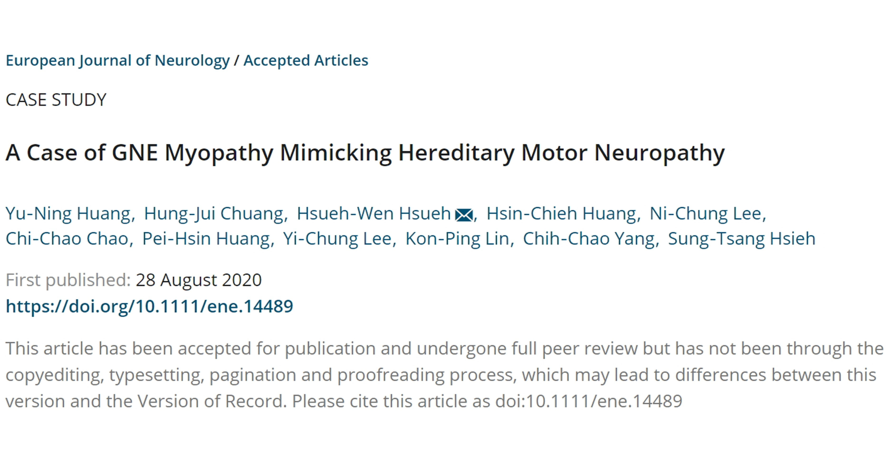
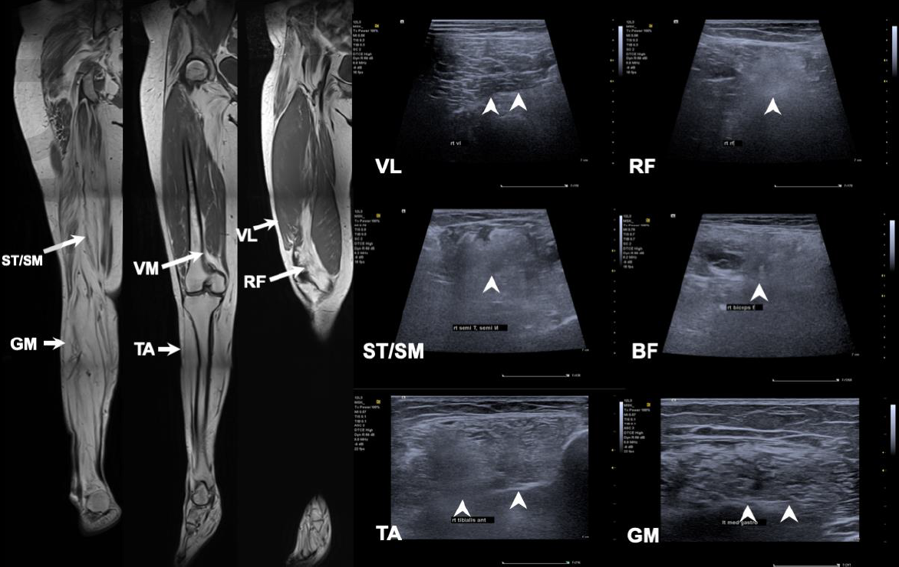

文章介紹
薛學文醫師團隊，介紹了一位患者，上肢遠端無力達 15 年，並逐漸進展至下肢的案例。一開始經由臨床檢查懷疑為遺傳性運動神經元疾病，屬於神經病變，但藉由全外顯子定序，發現可能是 GEN 基因異常造成的 GNE 肌肉病變，也就是遺傳性包涵體肌肉病變（hereditary inclusion body myopathy）。
之後接受 MRI 評估，選擇肌肉力量降低且 MRI 所見肌肉病變明顯處作肌肉切片檢查，確認了這個診斷。文章中並提供清楚的 MRI 與超音波圖片。

作者群認為，在目前的基因檢查流程，有可能會遺漏掉這類非典型表現的 GNE 肌肉病變，在討論中提出了明確的建議。對於影像檢查，特別提到 MRI 在選擇切片位置的重要性。
疾病少見，或以非典型方式表現，並非被刊登的充分條件，更重要的是提出清楚的臨床意義，甚至臨床流程建議，對所有讀者產生意義。如果有清晰的圖片，說服力更強。本文作了很好的示範，也順利登上 Q1 期刊。
- PubMed
- Article on European Journal of Neurology
恭喜薛醫師！